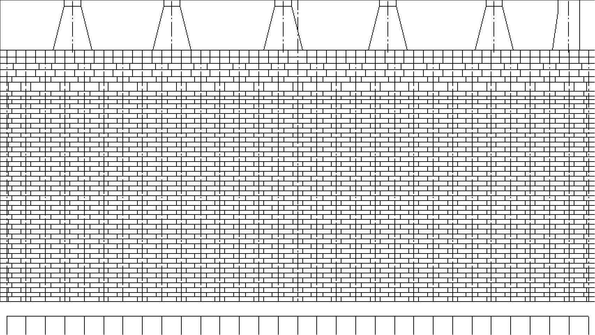

【損傷入力】 作業者(ID:nakai)
損傷確認日
検査箇所
未入力
損傷入力
補修入力
編集
損傷箇所リスト
損傷コメント
未入力
現状窯幅
追加...
補修箇所リスト
補修コメント
未入力
補修窯幅
追加...
補修中設定
未入力

＜完了
検査日入力
キャンセル
君津
炉団
1
2
3
4
5
炭化室No.
若番
末番
＜戻る
キャンセル
未
入力完了
撮影写真を見る
＜完了
損傷コメント入力
キャンセル
＜完了
キャンセル
現状窯幅入力
フリュー
段数
測定値
CS
PS
＜戻る
キャンセル
補修開始日
補修終了日
未補修
補修完了
補修情報詳細入力
補修写真を見る
＜完了
キャンセル
補修材料選択
使用量
個
＜完了
補修コメント入力
キャンセル
＜完了
キャンセル
補修窯幅入力
フリュー
段数
測定値
CS
PS
＜完了
補修中設定
キャンセル
補修中
コークス炉管理
選択して下さい。
ローカル読込
ローカル保存
マスターダウンロード
設定
詳細情報
ホーム
クリア
保存
画像スライド中
損傷種別：
単段破孔
炉底損傷種別：
大
炉写真
キャンセル
損傷・補修箇所履歴検索
登録日～
君津
鹿島
炉団NO.～
炭化室NO.～
若番
末番
すべて
コメント（部分一致）
すべて
補修済
未補修
補修中
損傷・補修結合条件
単段破孔
AND
OR
溶射
AND
OR
多段破孔
AND
OR
ピース煉瓦溶射
AND
OR
煉瓦欠損
AND
OR
モルタルパッチ
AND
OR
任意開口
AND
OR
セミドライ吹付け
AND
OR
煉瓦陥没
AND
OR
部分差替
AND
OR
窯口狭小化
AND
OR
広範囲部分差替
AND
OR